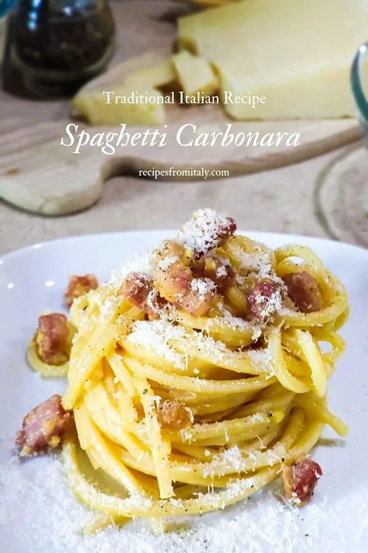

Traditional Spaghetti Carbonara

Traditional Spaghetti Carbonara Recipe
Spaghetti Carbonara, one of the most famous Pasta Recipes of Roman Cuisine, is made only with
5 simple ingredients: spaghetti seasoned with browned guanciale, black pepper, pecorino
Romano and beaten eggs.
In the authentic Italian recipe for carbonara, the ingredients are very few and of excellent
quality. The high quality of ingredients is a necessary condition for the success of this
recipe.
In spite of many beliefs, the ingredients of the traditional recipe are only 5: guanciale,
pecorino Romano, eggs, pepper and spaghetti.
To make the best carbonara of your life, you
don’t need any other ingredients, so
DO NOT USE garlic, parsley, onion, cream, milk, parmigiano, pancetta, bacon.
How to Make Carbonara Recipe
- Prep Time: 20 Min
- Cook Time:10 Min
- Yields : 4
Ingredients
- 350 g (12 oz) of spaghetti
- 200 g (7 oz) of guanciale
- 4 whole medium eggs (1 egg each yeld)
- 100 g (1 cup + 1 tablespoon) of grated Pecorino Romano cheese
- ground black pepper
How to Cook !
- First, boil the water for the pasta while you prepare the carbonara sauce.
Remember: 1 liter (4 cups) of water for every 100 g (3,50 oz) of pasta and 15 g
(1 tablespoon) of coarse salt per liter (4 cups) of water.
Cut the guanciale into small pieces (cubes, slices… as you prefer) then cook in a
skillet over medium heat for about 2 to 3 minutes. Stir occasionally so that it
cooks evenly. The more the guanciale cooks, the more its fat will melt and its meat
will become crispy. The level of cooking is up to you, depending on your taste.
Some people like their guanciale well cooked and others prefer it soft.
No need for oil: guanciale is already fatty, oily and fabulous on its own.
If you want, you can add a tablespoon of cooking water and emulsify.
This will create a great oily sauce to season the spaghetti nicely.
When it’s ready, turn off the heat, cover with a lid and set aside.
- Now prepare the pecorino cream. So, in a bowl put the eggs and pecorino
Romano cheese. Use the whole egg, not only the egg yolk.
Pecorino Romano, the only cheese that is recommended for making carbonara,
is a very salty and flavorful Italian cheese so there is no need to add salt.
- Add some freshly ground black pepper. Then, mix quickly with a fork – or a hand
whisk – until you have a creamy sauce.
- This egg and pecorino cheese sauce should be quite thick. Set it aside for the moment.
The water should now be boiling so add the salt and cook the spaghetti.
- Now let go and they will fall in all directions. As they soften, use a fork to let
them sink in, then stir.
Cook the spaghetti al dente, following the cooking time found on the pasta package.
- Using a spoon for spaghetti, drain the pasta when ready. Then place them in the skillet,
over high heat, to season well with the guanciale.
At this step, we have reached the crucial moment of spaghetti carbonara.
Not to put tension on it, but this is the fleeting moment in which you can make an
immortal dish or one that will be a real failure. So now you have to be quick,
ready and ruthless.
- When the spaghetti and guanciale sizzle in the pan, TURN OFF THE HEAT , otherwise the
eggs will overcook and you’ll end up with scrambled eggs and pasta!
Back to top
Odin Recipes